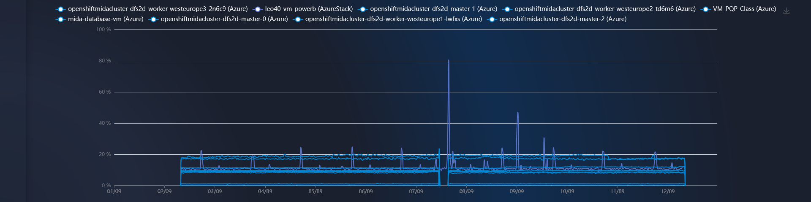
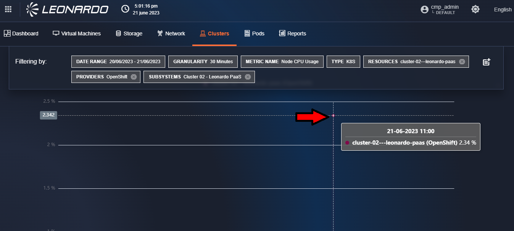
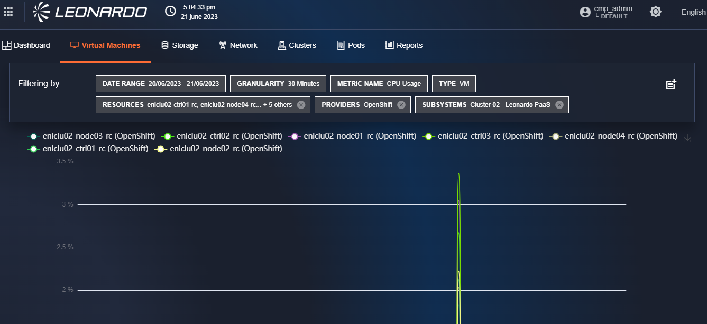
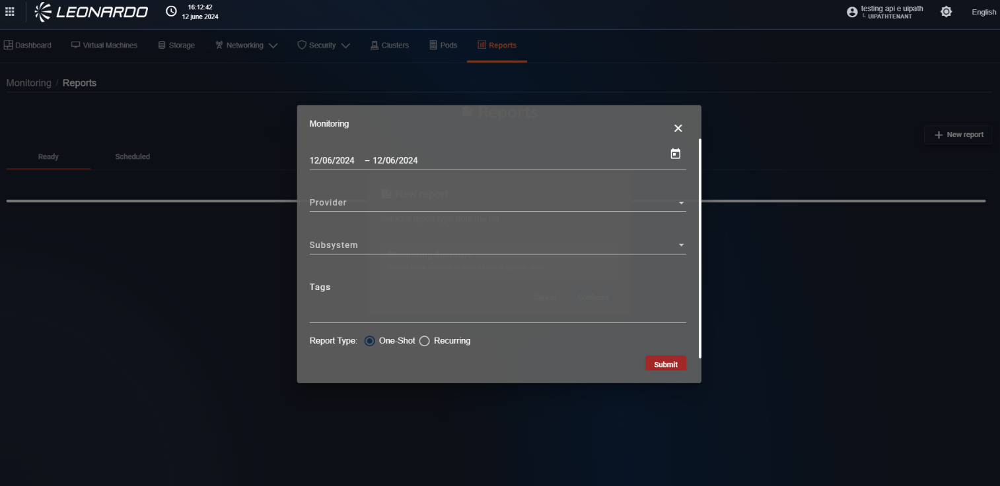
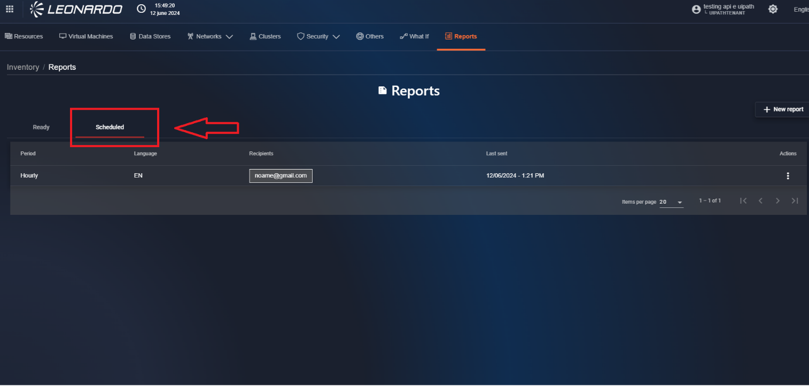
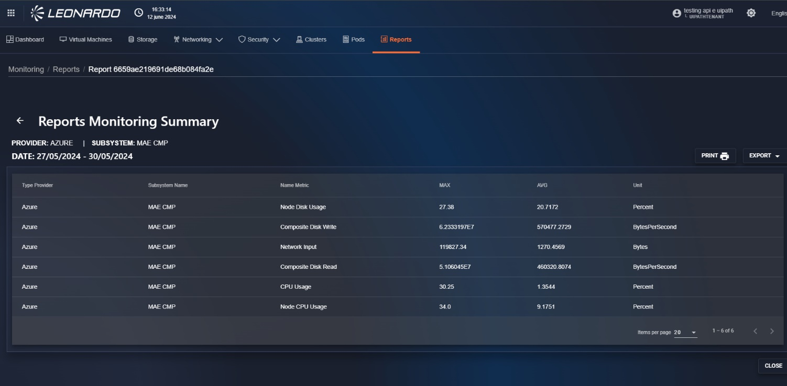

Monitoring
La SCMP raccoglie le metriche su tutti i cloud provider e le aggrega per macrocategorie.
Questa aggregazione (modificabile editorialmente) permette il confronto tra metriche su provider diversi.
Accedendo alla dashboard, possiamo vedere come questo meccanismo di aggregazione, permetta di avere una panoramica sull’utilizzo delle risorse suddivise per provider e organizzate per tipo di risorsa associata.
Visualizzando il dettaglio delle singole metriche invece, questo meccanismo, ci permette di confrontare metriche cross provider. Utilizzando i menu in alto sopra il breadcrumb, è possibile accedere al dettaglio delle metriche per tipologia di asset. Qui si potranno confrontare asset su provider diversi, visualizzare le metriche fino a due anni, modificare la granularità dei dati ed esportare i risultati in vari formati.
Si può accedere al modulo di monitoring tramite l’apposito menu. Come mostrato in figura:

La dashbord si presenta con un overview di tutti i provider associati, mostrando metriche per vm, dischi, network e cluster k8s. Come mostrato in figura:

L’utente si ritroverà all’interno della pagina del tab “Dashboard” di Monitoring in cui sono presenti le seguenti sezioni: “VM”, “Storage”, “Network”, “Clusters”, “Pods” e “Reports”. In ciascuna sezione sono presenti dei grafici di andamento delle metriche in funzione del tempo (time-series singola) con percentuale di utilizzo di una determinata metrica rispetto ad un tipo di servizio
Metriche delle risorse “VM” “Storage” “Network”
Cliccare sul tab “Virtual Machines” per accedere all’interno della dashboard delle metriche delle “VM”

Per ottenere il grafico delle metriche cliccare sul menu a tendina “Provider”. All’interno del menu, è possibile cliccare su uno o più checkbox per selezionare più provider, è anche possibile selezionarli tutti cliccando sul checkbox “Select all”.
Successivamente, cliccare sul menu a tendina “Subsystem”. All’interno del menu, è possibile cliccare su uno o più checkbox per selezionare più sottosistemi, è anche possibile selezionarli tutti cliccando sul checkbox “Select all”.
Successivamente, cliccare sul menu a tendina “Metric Name”. All’interno del menu, è possibile cliccare solo su un tipo di metrica.
Il pulsante che raffigura un calendario all’interno del menu a tendina “Date range” permette la selezione del range delle date.
Sopra il menu a tendina di “Date range”, è presente il menu a tendina “Granularity” in cui sono disponibili le seguenti granularità:
- 1 Minute
- 5 Minutes
- 15 Minutes
- 30 Minutes
- 1 Hour
- 6 Hours
- 1 Day
- 1 Week
In base al range di date selezionato, si otterrà una determinata granularità:
- La granularità a 1 minuto non sarà disponibile se il range di date > di 24 ore.
- La granularità a 5 minuti non sarà disponibile se il range di date > di 7 giorni.
- La granularità a 30 minuti non sarà disponibile se il range di date > di 30 giorni.
- La granularità a 1 ora non sarà disponibile se il range di date > di 6 mesi.
Le metriche possono essere ricercate in base ai TAG associati alle risorse .
Cliccare sul campo “Search tags...” e cliccare sul menu a tendina su un TAG, oppure compilarne uno manualmente. Si possono inserire uno o più TAG.
È possibile selezionare dal menu a tendina di “Granularity” altre granularità, ma come spiegato prima, tutto dipenderà dal range di date selezionato. Inoltre, è possibile recuperare un grafico delle metriche fino a due anni.

Shortcut dal Clusters alle metriche delle VM che lo compongono
Accedendo al sottomenu Clusters è possibile spostarsi dal grafico dellemetriche del cluster direttamente alle metriche delle risorse che compongono il cluster mediante la seguente procedura:
- Accedere al sottomodulo Clusters;
- Selezionare sul filtro:
- Provider: OpenShift.
- Sottosistema: uno tra quelli disponibili.
- Risorsa: una tra quelle disponibili.
- Metriche: una tra quelle disponibili che restituisca grafici con dati.
- Passando il mouse sul grafico restituito verrà mostrata una finestra che riporta la risorsa del cluster di cui sono evidenziate le metriche misurate.
- Su tale grafico cliccare sul puntino associato alla finestra.

Verranno aperte le metriche delle risorse all’interno del sottomenu Virtual Machines .

Strumenti di reportistica
La funzionalità di reportistica, specifica per funzionalità, permette di generare dei report globali delle informazioni disponibili per i vari provider, all’ interno delle pagine verrà data anche la possibilità di creare dei file per facilitare la condivisione delle informazioni.
Per accedere alla funzionalità, sopra il path del breadcrumb, cliccare sul tab “Reports” .

Creazione di un report
In alto sulla destra della pagina possiamo cliccare sul pulsante “New Report” per avviare la creazione di un report, nello specifico viene visualizzata una modale che contiene la lista delle tipologie di report disponibili .

Una volta selezionata la tipologia di report cliccare sul pulsante “Configure”, nella finestra appena aperta troviamo un campo temporale, dal quale è possibile selezionare il periodo di dati di monitoraggio da inserire all’ interno del report. Il campo “Provider” che permette di selezionare uno o più provider preesistenti nel sistema, successivamente è possibile selezionare uno o più sottosistemi da includere nel report, se non vengono selezionati dei provider non sarà possibile selezione nessun sottosistema. Infine è presente una sezione “tag” per includere le sole risorse che presentano il tag inserito. .

A questo punto l'utente può scegliere tra due diverse azioni:
- Creare un report statico che verrà salvato nel sistema.
- Programmare una schedula che generi il report periodicamente.
Per confermare la creazione di un report statico verificare che per il campo “Report type” sia stato selezionato “One-Shot” e cliccare il pulsante “Submit” presente in basso.
Dopo un periodo di caricamento sarà possibile visualizzare nella lista il report appena generato.

Schedulazione del report
Se invece si vuole programmare l’esecuzione dei report automatica sarà necessario selezionare “Recurring” per il campo “Report Type”, in questo caso la finestra si aggiorna per mostrare i parametri aggiuntivi per la configurazione del report periodico.
I parametri da inserire sono:
- Period: permette di selezionare la frequenza di invio del report (oraria, giornaliera, ...), questo campo sovrascrive il periodo di selezione dei dati di monitoraggio inserito precedentemente.
- Report Language: permette di selezionare la lingua utilizzata nel report
- File format: permette di selezionare una o più tipologie di file da includere nella mail
- User E-mails: permette di inserire una mail alla quale inviare i report, dopo aver inserito una mail è necessario premere “Invio” sulla tastiera per confermarne l’inserimento, una volta premuto la mail appena inserita passerà nel box in fondo e il campo verrà svuotato per permettere l’inserimento, se necessario, di una nuova mail

Avendo configurato tutti i parametri il pulsante “Submit” diventerà cliccabile, cliccarlo per confermare l’inserimento e dopo un periodo di caricamento sarà possibile visualizzare nella lista il report appena generato .
Lista dei report schedulati
Per visualizzare la lista dei report schedulati , selezionare il tab “Scheduled” presente in alto sulla sinistra nella pagina dei report

In questa pagina troviamo la lista e le relative informazioni dei report schedulati presenti nel sistema, per ogni risultato è possibile, cliccando il pulsante “Tre punti” sulla destra sarà possibile effettuare tre operazioni:
- Visualizzare l’ultimo report generato .
- Editare le impostazioni della schedula, non sarà possibile modificare i provider o sottosistemi selezionati .
- Eliminare la schedula per interrompere l’invio delle e-mail.

Utilizzo dei report
Cliccando sulla riga di un report statico, o utilizzando il pulsante “Show report” disponibile per i report schedulati sarà possibile visualizzare la pagina di dettaglio del report selezionato
All’interno del sommario del report dell’Monitoring, sono presenti i filtri usati dall’utente per generare il report.
Sotto i filtri, è presente la tabella riassuntiva delle metriche delle risorse appartenenti ai provider. A destra sono presenti due pulsanti: “PRINT” ed “EXPORT”.
Cliccando sul pulsante “PRINT”, appare una modale di anteprima della stampa. Per stampare il report, cliccare sul pulsante in basso a destra “Stampa”, a questo punto si avvierà la stampa del suddetto.
Cliccando sul pulsante “EXPORT”, è possibile esportare il report in formato “.csv”, “. json” o “.pdf”.
Per tornare al tab “Results”, in basso a destra, cliccare sul pulsante “CLOSE” oppure in alto a sinistra cliccare sulla freccia che punta verso la sinistra, accanto al titolo del report.
